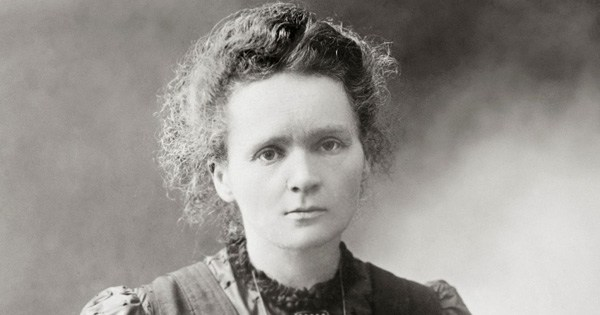
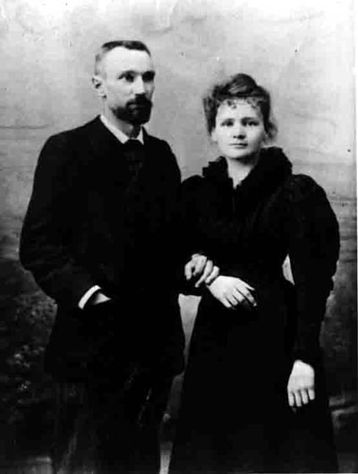
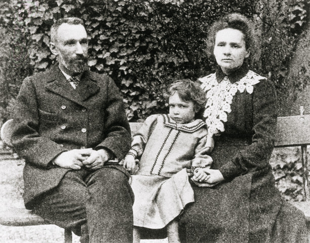
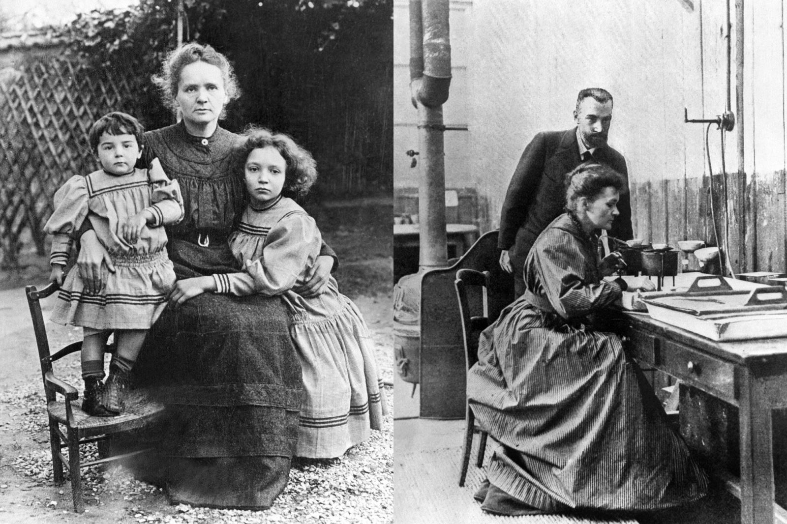
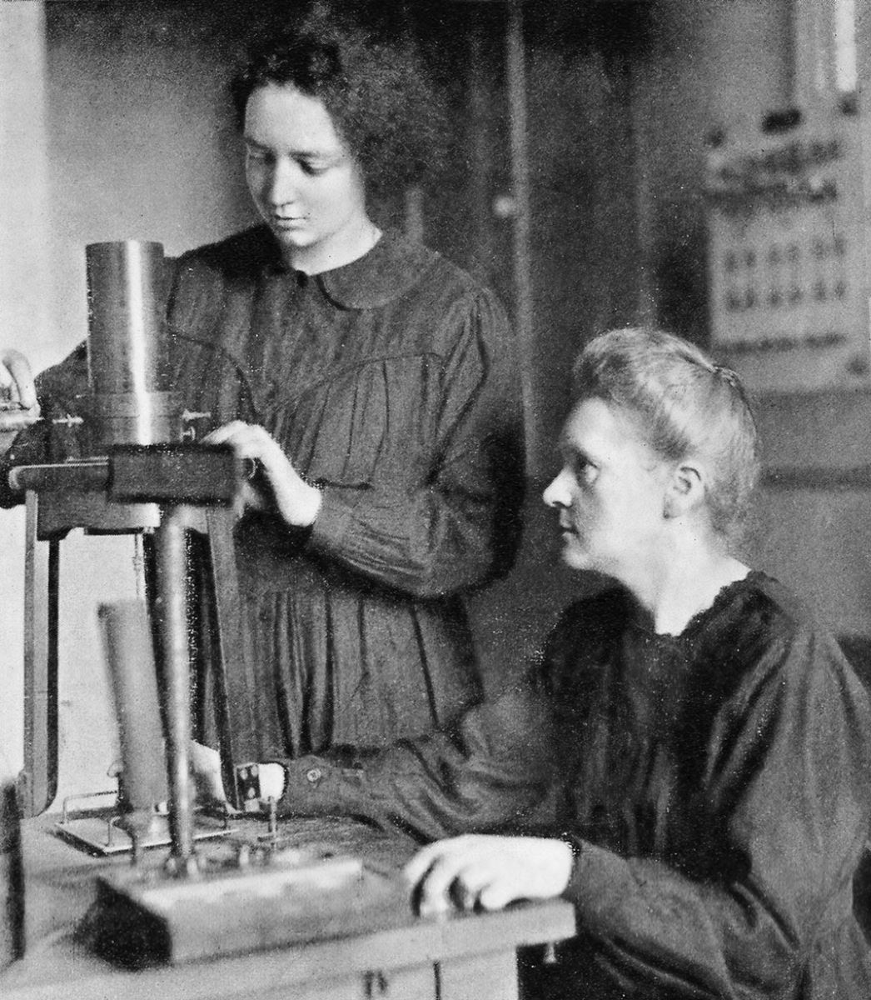

Thân mến tặng riêng các bạn Nữ sinh viên trường Đại-Học Khoa-Học. Sài-gòn đã yêu cầu tôi viết bài này.
N.V
CÔ NỮ SINH NGHÈO

MÙA thu năm 1891, các cậu sinh viên Đại học đường Sorbonne hay thầm thì chỉ chỏ một cô nữ sinh trẻ và đẹp, màu tóc ánh vàng, ở trong lớp ra, sau giờ Vật lý-học.
- Con bé nào đấy nhỉ?
- Một nữ sinh viên ngoại quốc. Cái tên khó đọc bỏ xừ... Nhưng luôn luôn đứng đầu lớp.
- Tên gì?
- Marya Sklodovrska.
Nam sinh viên khác, cũng như sinh viên có các quốc tịch khác, ở Đại học đường Sorboone chì “ngán” cô gái ngoại quốc nào đấy, thế thôi. Chứ cô ta cũng chưa có thành tích gì để cho các cậu Cử nhân Khoa học tương lai phải đặc biệt chú ý đến. Ở một trường Đại học rạng danh cả thế giới như trường Sorbonne, muốn cho thiên hạ đặc biệt lưu ý tới thì ít nhất cũng phải có một thiên tài gì xuất chúng mới được.
Cô Marya Sklodowska trông người thì đẹp thướt tha, duyên dáng, tuy không bao giờ “làm dáng” như các cô nữ sinh khác, nhưng có vẽ nhút nhát, ít giao thiệp với ai, ít ưa trò chuyện vớ vẩn. Đến giờ học, cô có mặt tại trường, rồi mãn lớp là cô về thẳng nhà, không khi nào đi chơi lang thang ngoài phố. Năm ấy cô 24 tuổi, một số nam sinh viên, học kém cô và ganh ghét cô, bảo cô là “làm phách” muốn “lập dị”, muốn làm ra vẻ “ta đây”. Nhưng cô không trả lời, chỉ chăm học, học mãi.
Một cô bạn gái người Pháp, quen thân với Marya, và học cùng lớp, méc lại cho tụi sinh viên con trai biết rõ lai lịch và đời sống cha Marya như sau dây:
“Marya Sklodowska (trong gia đình thường gọi là Mania) là người quê quán ở Polonia (Ba Lan), sinh ngày 7-11-1867. Gia đình cô nghèo, tuy ông than sinh làm giáo sư Vật lý và Toán tại một trường Trung học ở Polonia, mẹ làm giáo viên Tiểu học. Cô có một người anh và ba người chị. Cô là em út. Ông thân sinh học thông cả tiếng Pháp, tiếng Anh, tiếng Đức và tiếng Nga. Nhờ vậy mà cô Marya cũng được cha chỉ bảo cho nhiều về văn hóa các nước ấy, và cô cũng có học thêm Pháp và Anh ngữ.
Năm 1883, cô 16 tuổi, đỗ tú tài Toán học và được thưởng một chiếc mề đay vàng và cô đổ đầu.
Nhưng mẹ cô chết sớm, cô phải nghỉ học. Cô về quê nghỉ một năm, và nhất định quên hết các môn học ở nhà trường. Cô viết thư cho các bạn, có câu sau đây:
“Tôi quên hẳn hình học và đại số học, cho đến đỗi tôi không thể tưởng tượng rằng trong trường có dạy hai môn đó!”
Cô nghỉ dưỡng sức được một năm, thì ông thân sinh của cô đến hạn hưu trí. Tiền lương hưu trí không đủ nuôi gia đình, người con trai Josef, và ba cô con gái Bronia, Hela và Marya đều phải đi kiếm việc làm.
Marya đi dạy tư. Nhưng trong trí óc cô vẫn nuôi một lý tưởng. Cô vẫn đeo đuổi một mục đích khoa học.
16 tuổi, mới thi đổ tú tài, cô đã bảo: “Chỉ có khoa học là tiến bộ!”. Cô không theo đạo Thiên chúa, cô cho rằng những hiện tượng cụ thể và những sự kiện thực tế là quan trọng mà thôi. Thân sinh của cô, ông giáo sư vật lý học, gây ảnh hưởng cho cô rất sâu đậm trong khi giảng giải cho cô về những phát minh khoa học của Louis Pasteur, của Claude Bernard và triết học duy lý (Philosophie rationnelle) của Darwin. 18 tuổi, cô dạy tư tại nhà một ông luật sư ở Varsovie, một ông già trên 60 tuổi, góa vợ, mà có 6 cô con gái, và nuôi trong nhà những 5 đứa đầy tớ gái không làm gì cả, chỉ ăn rồi giỡn chơi với ông. Ông luật sư già lại muốn tằng tịu với cô giáo mới tới. Cô liền bỏ chỗ dạy tư lộn xộn này, đi tìm chỗ khác Một ông chủ đồn điền mời cô về dạy cho con ông ở một trại chăn nuôi miền thôn quê. Cô thích nơi này lắm, và tránh xa thành phố, được tỉnh mịch để cô học thêm. Con gái lớn của ông chủ, tên là Bronko, 18tuổi, thương cô lắm và mở rộng lớp học để cho cô dạy thêm học trò trong làng. Ba tháng sau, lớp học của cô có được 18 học sinh. Cô dạy mỗi ngày 2 giờ, thứ Tư và thứ Bảy 5 giờ. Cô quyết dạy cho được nhiều tiền, để dànd tiền sau này đi học thi cử nhân. Dạy bận rộn như thế, cô Marya vẫn còn thì giờ để học. Trong thời gian này, cô nghiền ngẫm ba quyển sách, Vật lý học cao đẵng của Daniell, xã hội học của Spencer (bằng Pháp văn) và Giải phẫu học và Sinh vật học của Bert (bằng tiếng Nga). Cô đang dạy học vui vẻ, yên tĩnh và chăm chỉ nghiên cứu các sách trên kia, thì đến mùa Hè, người con trai lớn của ông chủ, học ở thủ đô, về nhà nghỉ hè. Chàng cùng lứa với cô, 19 tuổi, thấy cô đẹp và học giỏi, đâm ra mê cô và muốn cưới cô làm vợ. Nhưng ông thân sinh của chàng không bằng lòng, bảo: “Con nhà giàu không lấy vợ nghèo.”
Cô giáo dạy tư, lặng lẽ xách va li ra đi. Cô trở về ở với cha già. Ông cụ vừa xin được một chỗ làm; giám đốc viện Cải Huấn Thiếu nhi, được món tiền lương khá. Nhờ đó, cô Marya Sklodowska được ở nhà lo việc gia đình cho cha, khỏi phải đi kiếm việc làm ở ngoài. Cô ở nhà mãi đến năm 1891, cô 24 tuổi, dành dụm được số tiền nho nhỏ, xin cha cho sang Paris để tiếp tục học nữa. Cô mua vé xe lửa hạng tư, sang Pháp một mình với một chiếc vali nhỏ đựng y phục và ba vali sách vở. Đến kinh đô nước Pháp, cô liền tới Trường Đại học Sorbonne, ghi tên vào ban Toán Lý Hóa.
Mỗi tháng ông cụ chỉ gởi cho 40 đồng rúp, nghĩa là 90 đồng francs, để cô tảa nào là tiền phòng tiền trọ, tiền ăn, tiền mua sách vở, nào là tiền đóng học phí ở Đại học, giữa Kinh đô Paris.
Vì vậy, cô Marya phải hết sức tiện tặn. Trong quyển sổ nhật ký của cô, cô đã chép chương trình hoạt động của cô như sau đây: “Không đi chơi - không đi xem hát - không đi dự các cuộc vui của bạn bè”.
Cô chỉ học và nghiên cứu các sách Khoa học của Pháp. Mùa đông, trời lạnh thấu xương, cô không có than để đốt lò sưởi. Đôi khi có than thì cô lại đãng trí, quên đốt lò sưởi, vì đang chăm chỉ ngồi bàn viết những công thức đại số và những phương trình.
Năm 1893, cô 26 tuổi, đỗ cử nhân Vật lý học và đổ thủ khoa. Năm sau, 1894, cô lại đổ cử nhân Toán, cũng chiếm giải thủ khoa luôn! Sinh viên Đại học Sorbonne lại càng “ngán” cô thiếu nữ Polonia.
Bây giờ ông cụ chưa gởi tiền sang kịp, cô Tú Marya chỉ còn vài đồng francs trong túi, đành ăn bánh mì trét bơ và uống nước trà cho đỡ đói, suốt ba tuần lễ như thế, trước ngày thi.
Thi đậu xong rồi cô mới nhận được tiền của cha, trừ các món tiền nhà, tiền than, tiền sách, tiền giặt ủi, còn lại vừa đủ cho cò ăn một bữa tiệc mừng đặc biệt, gồm có vỏn vẹn: 2 quả trứng gà, 1 bánh chocolat và 1 trái táo.
LẤY CHỒNG: ÔNG GIÁO SƯ CỦA CÔ

Trong nhật ký của cô nữ sinh viên Marya sklodowska cô ghi hai câu rất lý thú: “Nhất định không yêu ai. Nhất định không lấy chồng”.
Cô nói thật đấy.Nhưng cô nói thật trong lúc cô chưa gặp sự thật đó thôi. Sự thật hiển hiện ra dưới hình dạng một ông giáo sư dạy trường đại học Sorbonne- ông giáo sư của cô tên là Pierre Curie. Ông này là một bậc kỳ tài của Khoa học, tuy chưa có tiếng tăm gì bao nhiêu. Ông sinh ngày 15-5.1859. Hồi ông 55 tuổi ông đã viết vài quyển sách nghiên cứu về Khoa học, và suốt ngày ông vẫn cặm cụi thí nghiệm các loại tinh thể (cristaux). Người đẫy đà, vầng trán cao, râu quai nón. Nét mặt, tuy vậy, vẫn là hiền lành đôi mắt mơ màng, nhìn suốt vào sự vật chung quanh.
35 tuổi, ông chưa có vợ. Ông gặp cô thủ khoa Marya Sklodowska tại nhà giáo sư Kowalski, người cùng quê hương với cô. Ông khen cô, cô cảm ơn, rồi hai người nói chuyện với nhau say mê về vật lý học… Ông muốn đến thăm cô tại nhà riêng của cô. Cô mời anh đến căn phòng cô ở trọ. Căn phòng một cô nữ sinh viên nghèo, chẳng có gì cả ngoài các đống sách to tướng, đầy cả phòng, và các chai lớn, chai bé, đựng các chất hóa học của một nhà thí nghiệm. Ông bảo: “Cô có đầy đủ khả năng của một bậc Vĩ Nhân”.
Sự giao thiệp mỗi ngày mỗi thân mật, từ tình Thầy Trò biến ra tình Bạn, rồi từ tình Bạn biến ra tình Yêu...Một năm sau. Ngày 26 tháng 7 năm 1895 ông giáo sư Vật lý học Pierre Curie, 36 tuổi, làm lễ thành hôn với cô Cử nhân vật lý học Marya Sklodowska, 28 tuổi. Từ đây, cô Marya thành ra bà Marie Curie.
TUẦN TRĂNG MẬT CỦA CẶP VỢ CHỒNG NHÀ BÁC HỌC
Không hiểu tại sao, ở xã hội nào cũng vậv, và ở thời đại nào cũng vậy, trừ những trường hợp đặc biệt, hầu hết những người được trời phó thác cho đôi chút tài hoa đều phải chịu cảnh nghèo nàn, thiếu hụt về vật chất trong một thời gian khá lâu.
Ông giáo sư Vật lý học Pierre Curie cưới cô thủ khoa Marya Sklodowska xong rồi, trong túi cả hai người không còn một đồng xu. Nhờ các món quà cưới khá đắt tiền do các bạn hữu tặng mừng, hai vợ chồng đem bán lấy tiền mua được hai chiếc xe máy (xe đạp) để đi du lịch hưởng tuần trăng mật. Với hai chiếc xe đạp kiểu 1895, đôi tân hôn đã bắt đầu có danh tiếng mà đâu được diễm phúc đi du lịch vòng quanh thế giới! Hay là sang Venise, Florence, Naples, Barcelone Genève! Cặp tình nhân của Khoa học chỉ khom lưng đạp xe máy đi dạo chơi từ sáng tới tối trên các nẻo đường xa châu thành Paris. Người ta thường gặp hai người âu yếm ngồi ăn bữa cơm trưa dưới bóng mát thanh tịnh của một cây cao trên bãi cỏ, nơi đòng quê. Họ ăn những gì? -Vài ổ bánh mì với một hộp fromage, vài trái cam, vài trái táo (pomme). Tối đến, người ta thường thấy đôi vợ chồng (chàng 36, nàng 28) thuê một quán trọ nghèo nàn ở dọc đường, để ấp ủ tình yêu say đắm. Không ai ngờ rằng vợ chồng tài hoa sắp trở nên hai bậc vĩ nhân của thế giới, hai nhà Đại Bác học của Thế kỷ Hai mươi, đã tạo được hạnh phúc yêu đương của họ với vài đồng francs giá thuê phòng ngủ mỗi đêm, và hai chiếc xe đạp cùi, đạp mỗi ngày lang thang trong nắng, gió...
Đi “du lịch hôn thú” được một tuần lễ hoàn toàn thơ mộng rồi hai vợ chồng trở về Paris thuê một căn nhà chật hẹp, có 3 phòng, ở số 24 đường La Glacière, giữa một khu vườn có cây cao, bóng mát. Căn nhà nghèo nàn, thiếu cả tiện nghi, nhưng hai vợ chồng định dùng nó làm một cái ổ của Khoa học. Chỉ có một tủ sách lớn có hàng nghìn quyển, và một cái bàn bằng gỗ trắng để làm việc, một chiếc ghế của chồng, một chiếc ghế của vợ. Trên bàn một đống sách vật lý-học, một cái đèn dầu lửa, một bình hoa. Thế thôi! Không có phòng khách. Không có chiếc ghế thứ ba cho khách ngồi. Mỗi buổi sáng cô vợ Marie Curie đốt lò lửa, đặt cái soong lên bếp nấu thịt, rồi khóa cửa đi với chồng đến trường Đại-học Khoa-học, nơi đây ông dạy học, bà thì làm việc tại phòng thí nghiệm của Học đường. Trong một tiếng đồng hồ rồi bà đạp xe máy chạy về nhà thì soong thịt cũng vừa chín... Bà bắc soong lên nấu một món khác, bỏ đấy cho nó chín để lên phòng làm việc, nghiên cứu các sách khoa học.
Đời sống hàng ngày của cặp vợ chồng Pierre và Marie Curie trong năm đầu sống chung với nhau là như thế.
ĐỨA CON GÁI ĐẺ THIẾU THÁNG: NỮ BÁC HỌC TƯƠNG LAI, NOBEL 1935

Pierre, Irène và Marie Curie
Năm 1897, hơn 1 năm sau, bà Marie Curie có thai. Có thai đã được tám tháng, mà hai vợ chồng cao hứng hay đó là cái điên khùng của nhà bác học rủ nhau đạp xe máy đi chơi đến hải cảng Brest, cách Paris trên 660 ki lô mét! Bá quả quyết rằng đi như thế thì bà khỏe lắm, chẳng biết mệt tý nào. Ông chồng cũng ngây thơ (cái ngây thơ của các bậc thiên tài) tưởng đâu vợ mình là con gái của ông Trời, khác hơn người thường. Nhưng đi được nửa đường, bà thấy trong mình khó chịu, hai vợ chồng lại đạp xe máy quay về đến Paris ngày 12.9-1897- Ngay hôm ấy bà đau bụng rồi sinh ra một đứa con đứa con gái, đặt tên là Irène Curie, một em bé rất đẹp. Tuy bà đẻ thiếu tháng, nhưng không ngờ Irène cũns là một bậc thiên tài! Irène về sau cũng trở thành một nhà nữ bác học lừng danh thế giới như mẹ, và cũng được giải thưởng quốc tế Nobel về Hóa học, năm 1935.
Phần thì chăm chỉ tìm tòi về Vật lý học, phần thì lo việc nhà cửa, bếp núc, bây giờ lại sinh ra đứa con gái đầu lòng, bà Marie Curie vẫn một mình đảm đương hết mọi việc, đầy đủ bổn phận và tình yêu vài chồng với con.
Chính bà và chồng bà cũng không ngờ rằng trong căn nhà chật hẹp, và trong căn phòng thí nghiệm bé nhỏ của bà. giữa bao nhiêu là công việc nội trợ bê bối như thế, mà bà đã nhẫn nại bền chí, đi đến được một phát minh mới lạ và quan trọng nhất của Khoa học hiện đại! Nhà bác học Buffon nói: “Thiên tài là kết cấu của một sự bền chí lâu dài”, thật là đúng vậy!
KHÁM PHÁ RA CHẤT RADIUM

Lấy chồng được 2 năm, và sinh cong cô bé Irène, thì bà Marie Curie đã có cấp bằng Cử nhân Toán và Vật lý học, và một giải thưởng của Hàn Lâm Viện Khoa Học nhờ một phát minh về các tính chất từ lực của thép trụng (Propriétés magnétiques de 1’acier trempé.)
Bà vừa nuôi con, nào là tắm rửa con trong chậu giặt đồ, thay tã cho con, cho con bú, vừa lo ngày hai bữa ăn cho hai vợ chồng (ông đi dạy học suốt ngày) bà vẫn có thì giờ ngồi yên tĩnh trong thư viện và phòng thí nghiệm của bà, để soạn đề tài Luận án Tiến sĩ.
Tình cờ bà đọc bài luận án của nhà Vật lý học Henri Becquerel vừa mới đậu tiến sĩ hồi năm trước. Sauk hi nhà bác học Đức, Roentgen (giải Nobel) Vật lý học 1901) đã khám phá được Quang tuyến X, nhà bác học Henri Poincaré có ý nghĩ thử tìm xem các vật có huỳnh quang (fluotrscents) có phát tiết ra tia sáng giống như quang tuyến không. Henri Becquerel cũng nghiên cứu về đề tài ấy, và đã phát ra một hiện tượng mới lạ: những chất muối của một loại “kim khí hiếm có”, gọi là Uranium, tự nhiên ít tiết ra những quang tuyến có tính chất khác thường mà từ trước chưa có nhà bác học nào biết đến. Nếu ở trong phòng tối, đặt dưới quang tuyến của Uranium một tấm kiếng ảnh (plaque photoraphique ) bọc giấy ảnh ở ngoài, thì quang tuyến kia sẽ xuyên qua giấy ảnh làm cho giấy ảnh mờ đi, và ấn vào tấm kiếng ảnh làm cho tấm kiếng hóa đen. Henri Becquerel chỉ thí nghiệm và trình bầy hiện tượng quang tuyến Uranium như trên, mà không hiểu nguyên nhân vì sao quang tuyến Uranium lại ăn vào tấm kiếng ảnh.
Bà Marie Curie và chồng bà suy nghĩ rất nhiều về hiện tượng trên kia. Hai vợ chồng bàn luận với nhau mãi, và thí nghiệm trên đủ các chất hóa học để tìm cho ra nguồn gốc điện lực của quang tuyến Uranium. Ông vẫn đi dạy học, chỉ buổi tối mới rảnh rang đôi chút để hợp tác với bà trong việc nghiên cứu. Bà thì rất nhẫn nại, thí nghiệm, tìm tòi trên tất cả các chất hoá học và bà khám phá ra một chất mới, bà gọi là THORIUM, cũng phát tiết ra quang tuyến như Uranium. Trong lúc ba còn tìm nguyên nhân vật lý học của sự phát tiết quang tuyến bà đặt cho nó một danh từ mới: phóng xạ (radio activité) Ấy là danh từ mà tất cả các nhà bác học ngày nay đều dùng, và đã mở màn cho một trạng thái mới nhất của Khoa học: tính chất phóng xạ của một số kim khí.
Thí nghiệm mãi, bà Marie Curie lại nhận xét một hiện tượng khác, là có vài loại kim khi phóng xạ rất mạnh tuy rằng các loại này chứa đựng rất ít chất Uranium hoặc Thonium. Như thế, bà kết luận rằng quang độ phóng xạ (les degrés de radioactivité) mạnh hay yếu không phải do chất Uranium, hay Thonium trong kim khí có nhiều hay ít. Hay là có một chất phóng xạ nào khác hơn là chất Uranium chăng?
Theo bà phát minh ra được, thì chất mới, còn bí mật này, phóng xạ đến hai triệu lần mạnh hơn chất Uranium.
Ngày 12-4.1898, giáo sư Lippmann trình bầy tại Hàn Lâm Viện Khoa học Pháp một kết quả đầu tiên của công tác thí nghiệm của bà Marie Curie như Sau đây:
“Hai hợp chất của Uranium là Pechblende và Chalcolothe có tính chất phóng xạ mạnh hơn là chất Uranium”.
Tháng 7 năm 1898, bà Marie Curie báo tin đã khám phá ra được trong hợp chất pechblende, một nguyên tố mới. Bà lấy tên quê hương của bà là Polonia (Ba Lan) để đặt tên cho chất phóng xạ mới ấy, là Polonium.
Ngày 26.12.1898, cách nhau trong khoảng mấy tháng hai ông bà Marie và Pierre Curie vui mừng trình bày tại Hàn Lâm Viện Khoa học sự hai ông bà đã phát minn ra được trong chất Pechblende, một nguyên tố hóa học thứ hai, có tính chất PHÓNG XẠ vô cùng mạnh mẽ. Hai ông bà đặt tên cho nguyên tố mới lạ ấy là RADIU.
Sự phát sinh hai chất RADIUM và POLONIUM của Marie và Pierre Curie bỗng dưng làm đảo lộn tất cả các lý thuyết hóa học mà các nhà bác học thế giới đã tin tuởng từ bao nhiêu thế kỷ.
THIÊN TÀI KHOA HỌC CỦA CÔ VỢ 29 TUỔI
Những người tài giỏi bao giờ cũng có kẻ tiểu nhân ghen ghét, dèm pha và tìm cách phủ nhận giá trị của thiên tài. Hai vợ chồng Marie Curie không tránh khỏi định luật rất thường ấy. Trong lúc đa số các nhà bác học thế giới đang ngạc nhiên và thán phục về sự khám phá vô cùng quan trọng của bà Marie Curie và chồng bà thì có một số các nhà Hóa học vẫn chưa công nhận kết quả vĩ đại ấy. Vì họ cho rằng Marie và Pierce Curie chỉ mới thuyết trình về sự hiện hữu của chất Radium trong lý thuyết mà thôi, nhưng về thực tế chất Ridium mới lạ ấy vẫn chưa xuất hiện ra, chưa ai trông thấy nó, chưa rờ mó được nó, chưa biết nó như thế nào, trọng lực nguyên tử (poids atomique) của nó là bao nhiêu. Có vài nhà bác học lại chỉ trích bà Marie Curie là bịa đặt ra một chất hóa học không có, với những ức thuyết sai lầm, trái với những phương thức hóa học đã có từ trước tới nay. Có những kẻ ngu xuẩn còn dám cho rằng chất Radium do Marie và Pierre Curie phát minh ra trong lý thuyết chỉ là một “quái thai’’ của một cặp vợ chồng gàn, háo danh, lập dị.
Pierre Curie hơi chán nản, vì ông mệt mỏi quá rồi.Nhưng bà Marie Curie nhất định phải tìm cho có chất Radium thực tế để đưa cho người ta thấy chất Radium mới lạ mà từ xưa đến nay chưa ai biết, chưa ai nói đến, mà bây giờ, lần đầu tiên, bà Marie Curie, một nữ bác học trẻ tuổi, dám quả quyết là bà vừa khám phá được theo những thí nghiệm của bà về nguồn gốc phóng xạ của một vài loại kim khí.
Bà tin tưởng rằng nếu bà có một số lượng kim khí pechblende khá nhiều, bà sẽ nấu ra và lọc ra được chất radium. Nhưng vợ chồng bà rất nghèo, tiền lương dạy học ở Đại học không đủ chi dụng trong gia đình (bây giờ lại phải nuôi một chị ở ), thì tiền đâu mà mua kim khí pechblende rất quý giá, để bà nấu và lọc láy chất Radium?
May quá, Chính phủ Autriche có một mỏ Peckblende (1) ở Saint Joachimsthal (Jachymov) trong tỉnh Bohême. Chính phủ khai thác mỏ này để lọc lấy chất Uranium và các chất muối Urane dung trong kỹ nghệ thủy tinh, còn cặn bã thì bỏ đi. Bà Marie cho rằng chính trong cặn bã Pechblende còn nguyên vẹn chất Radium mà không ai biết. Bà hỏi mua thứ bã đó. Nhờ một nhà bác học nước Autriche cổ động dùm, chình phủ Vienne bằng long biếu không cho bà Marie Curie một tạ bã Pechblende. Bà chỉ tốn tiền chuyên chở mà thôi.
Bà Marie Curie vui mừng được có đủ nguyên liệu cần thiết nhưng bà lại lo về nỗi không có một căn phòng để nấu nguyên liệu ấy và lọc ra lấy chất Radium. Nhà bà chật chội quá. Hai vợ chồng mới yêu cầu viện Đại học Vật lý học cho ông bà mượn tạm một căn phòng bỏ không trong khu trường đại học, để dung làm nơi thí nghiệm. Ông viện trưởng bằng long. Đây là một phòng hoang vắng, trước kia trường Đại học Y khoa có lần mượn làm phòng mổ xẻ nhưng sau họ bỏ, không ai dùng đến nữa. Trong phòng dơ bẩn, có một chiếc bảng đen gãy nát vứt trong xó, vài chiếc bàn nhà bếp gãy chân, chất đống cạnh nơi cửa và mấy lò nấu bếp lâu ngày không dùng đã hư hỏng, vứt bừa bãi giữa nhà? Nền xi măng đã vỡ nát nhiều nơi. Sinh viên khoa học đồn với nhau rằng ở phòng này có ma. Họ ít muốn bén mảng tới đây làm chi, vì họ không thích làm bạn với ma. Mải nhà dột ba bốn chỗ. Bà Marie Curie phải kê lại các bàn thí nghiệm để tránh chỗ dột.
Ông bà vui mừng được ông viện trưởng để cho trọn quyền sử dựng căn phòng hoang phế ấy. Lập tức bà Marie Curie cho chở về đấy một tạ bã Pechblende của chính phủ Autriche biếu bà và bà đặt ống, mua than củi các thứ vật dùng để nấu nguyên liệu quý báu kia, nguyên liệu cặn bã ai cũng coi là đồ vô dụng, vứt đi.
Trong nhật ký của bà, có chép mấy đoạn sau đây về cách làm việc của bà trong căn phòng thí nghiệm suốt 4 năm đằng đẵng:
“... Chính trong cái chái dột nát và khổ cực này, chồng và tôi đã trải qua những năm sung sướng nhất trong đời sống của chúng tôi, những năm hoàn toàn hy sinh cho Khoa học. Nhiều khi tôi phải đứng suốt cả một ngày để khuấy trộn nồi kim khí sôi sùng sục bằng một cây sắt to lớn gần bằng tôi. Đến đêm, tôi mệt nhoài người, tay chân bủn rủn như muốn rụngvra cả...
“...Chúng tôi không có tiền, không có kẻ phụ giúp, công việc thật là khó khăn, bề bộn, chỉ có hai vợ chồng cố gắng, tự đảm đương lấy hết. Chúng tôi phải sáng tạo ra từ con số không...
“ …Có khi tôi phải nấu một lượt đến 20 kí lô nguyên liệu. Công việc ghê gớm là phải lôi kéo một thùng nguyên liệu ấy đến lò, trút nó vào chảo gang, nấu cho nó thật sôi, rồi cầm một thanh sắt dài to tướng để khuấy, khuấy mãi …”
Cả thế giới không ai có thể tưởng tượng được sức làm việc kinh khủng của nhà nữ bác học trẻ tuổi ấy, với một trí óc thông minh vĩ đại, một ý chí cương quyết phi thường, một đức tính kiên nhẫn siêu phàm.
Đế đỗi chồng của bà, nhà bác học Pierre Curie, cũng đã nhiều lần chán nản, lụt chí, muốn bỏ trôi công việc, đợi khi nào có đủ điều kiện thuận tiện sẽ tiếp tục thí nghiệm, nhưng bà nhất quyết đem đuổi đến cùng. Bốn năm như thế!
Vâng, bốn năm, từ 1898 đến 1902, bà Marie Curie say mê bên lò thí nghiệm, quyết nấu mãi một tạ cặn bã pechblende của người ta vứt bỏ, để lọc lấy chất Radium kỳ lạ phi thường, mà bà đã khám phá ra trong lý thuyết, mà một số các nhà bác học khác không tin là có.
Và bà đã thành công. Sau 45 tháng thí nghiệm, tìm tòi, bà đã lọc ra được Décigramme de Radium nguyên chất, trọng lượng nguyên tử là 224, [2]
Các nhà bác học thế giới đã được mục kích rõ rang kết quả vĩ đại và thực tế do bà Marie Curie đã khám phá ra. Toàn thể các nhà khoa học quốc tế đều xác nhận chất mới lạ, với trọng lượng nguyên tử 224.

Marie Curie và con gái Irène
TÍNH CHẤT PHÓNG XẠ KHÔNG NGỜ CỦA RADIUM VÀ GIẢI NOBEK 1903.
Nhiều người cho rằng chỉ có một mình bà Marie Curie đã có công lao phát minh ra chất Radium. Ông chồng bà chỉ giúp sức phần nào thôi, không quan trọng mấy. Nhưng sự thật thì ông Perrier Curie đã giúp rất nhiều vào công việc tìm kiếm của bà. Chính bà đã có ý nghĩ đầu tiên về Radium, bà đã kiên nhẫn tiến tới kỹ thuật phát minh và chất mới rất quan trọng ấy, nhưng ông cũng đã giúp bà nhiều về phần khoa học thuần túy, phần lý thuyết và các phương tiện đo lường đúng cân đúng lượng. Chất Radium đã xuất hiện được, là nhờ sự cộng tác chặt chẽ và có hiệu quả của hai ông bà Pierre cà Marie Curie.
Cặp vợ chồng bác học đã xác định những tính chất bất ngờ của Radium như sau đây:
- Radium chiếu qua một lớp giấy màu đen bọc ngoài một tấm kiếng ảh, làm cho tấm kiếng ảnh (plaque photographique) bị nám đen hết.
- Các chai bằng thủy tinh đựng Radium, bị biến ra màu tím.
- Giấy và các vật liệu bằng cellulose, đựng Radium, bị tan ra thành bụi.
- Radium chiếu ánh sáng rực rỡ trong đêm tối.
- Nhiều thể chất như kim cương, nhờ có Radium mà phát ra ánh sáng lân tinh (do đó người ta có thể phân biệt được kim cương thật và giả).
Và đây là tính chất quan trọng hơn cả, nguồn góc của nhiều sự phát minh và áp dụng ghê gớm khác về khoa học, là tính chất “truyền nhiễm” của Radium: các vật dụng, áo quần, không khí bị dính radium, đều cũng phóng xạ như nó.
Hy sinh cho Khoa học, chính Pierre và Marie Curie là những nạn nhân của khoa học, những vật hy sinh cho chất phóng xạ nguy hiểm của Radium! Pierre Curie bất đầu thấy nhiều vết cháy trên da, cháy thâm xuống dưới làn da nữa. Marie Curie thì bị mấy đầu ngón tay muốn thối hết. Và cả hai bị chất phóng xạ của radium ăn vào trong máu, làm chậm sinh nở các hồng huyết cầu...
Tháng 6 năm 1903, Hàn lâm viện Hoàng gia Anh quốc mời ông bà Pierre và Marie sang diễn thuyết tại London. Các giới bác học và trí thức Anh nô nức đón mừng hai vị “cha mẹ đẻ của Radium”. Marie Curie được trọng vọng đặc biệt hơn: hàng muôn vạn cặp mắt của dân chúng thủ đô Anh kinh ngạc và ngưỡng phục trước người đàn bà bác học kỳ tài, độc nhất trên thế giới, từ cổ chí kim!
Tháng 11 năm 1903, Hàn lâm viện London tặng hai ông bà huân chương quý giá nhất: mề đay (médaille) Davy.
Kế đến ngày 10 tháng 10 năm 1903, Hàn lâm viện Khoa học ở Stockholm, của xứ Suède (Thụy Điển), tuyên bố tặng một nửa giải thưởng Nobel cho nhà bác học Becquerel, và một nửa cho hai ông bà Curie, về vụ phát minh ra tính chất phóng xạ của Radium [3].
Nửa giải Nobel của ông bà Curie được 70.000 francs. Nhờ số tiền thưởng quốc tế này mà hai ông bà trả được nhiều món nợ, và nghỉ dạy ở viện Đại học, để ở nhà chuyên về công việc nghiên cứu.
Danh tiếng ông bà lừng lẫy khắp thế giới … Thư từ, điện tín các nơi gởi tấp nập đến Paris, nơi căn phòng dột nát, trụ sở của công việc thí nghiệm, để chúc mừng và hoan hô hai bậc vĩ nhân mới của nhân loại. Một nhà triệu phú Mỹ ở Chicago viết thư xin bà Marie Curie cho phép y lấy tên bà đặt tên cho con ngựa đua mà y cưng nhất trong đời!
Năm 1904, bà Marie Curie có thai. Ngày 6. 12. 1904, bà lại sinh ra một đứa bé thứ hai, đặt tên là Eve Curie [4]
Hai tháng sau kỳ khai hoa nở nhụy, bà lại trở về phòng thí nghiệm của bà, nơi đây hai vợ chồng đóng cửa làm việc cả ngày trong thanh tịnh. Cả hai đều tránh các cuộc tiếp xúc với khách thập phương mộ tài đến viếng thăm ít muốn giao thiệp với người ngoài, ít đi dự các tiệc tùng, chỉ trốn tránh trong nhà, như hai người ẩn dật.
Ngày 3 tháng 7 năm 1905, ông Pierrer Curie được mời vào Hàn Lâm Viện Khoa học Pháp. Xin ghi rằng, trước đây 3 năm, ngày 9/6/1902, nhiều bạn thân của ông đã giới thiệu ông ứng cử vào Hàn lâm viện Khoa học, nhưng các cụ hàn lâm ganh ghét danh tiếng của Pierrer Curie, lại bỏ phiếu cho người tranh cử với ông là Amagat - một giáo sư vô danh. Ông này được đắc cử, còn Pierrer Curie bị các cụ cho ra rìa.
Năm 1905, các cụ bị báo chí Pháp và ngoại quốc chỉ trích kịch liệt nên các cụ phải bầu cử nhà bác học đã được giải Nobel vào Hàn lâm viện.
Thế mà trong số 68 vị Hàn Lâm Khoa Học, vẫn còn có 22 vị bỏ phiếu cho người tranh cử đối lập của Pierrer Curie là ông Gernez - một giáo sư không có thành tích, không có tiếng tăm cũng như ông Amagat trúng cử vào năm 1902 vậy.
Thế mới biết, dù trên lĩnh vực Khoa học, lòng đố kỵ và tính ganh ghét của con người vẫn chưa nhượng bộ cho tinh thần cao cả.
Một năm sau, ngày 19/4/1906, hồi 2 giờ 30 chiều, ông Pierrer Curie ở trong một buổi tiệc của Viện Khoa học ra về, bị trời mưa tầm tã. Ông đi bộ, bước vội vàng trên lề đường Dauphine. Nhưng ông đãng trí, băng qua đường trong lúc một chiếc xe ngựa từ sau vụt tới. Con ngựa nhảy xổm lên, hất ông ngã lăn xuống đường nhựa, và đạp trên người ông và cứ chạy tới. Trong giây phút hiểm nguy, một chiếc xe cam nhông bị mưa làm mờ kiếng từ sau vụt chạy tới, đè cả một sức nặng 6 tấn lên người ông. Cái đầu của nhà bác học bị bể nát, bắn ra những mảnh óc và những tia máu đỏ ngòm trôi chảy trong nước mưa...
ĐAU ĐỚN MÀ BÌNH TĨNH
Được tin do mấy người bạn chạy về báo cho biết là ông Pierrer Curie bị chết vì tai nạn xe hơi, bà Maria Curie hốt hoảng hỏi dồn dập:
- Pierrer chết? Chết? Chết thật sao?
Một hung họa bất ngờ bỗng dưng cướp mất người chồng yêu quý và người cộng sự duy nhất của nhà nữ bác học trẻ tuổi.
Pierrer chết là cả cuộc đời bà từ nay sẽ hoàn toàn đơn độc, quạnh hiu. Bà thấy rõ rằng bà đang là nạn nhân của một định mệnh khắc khe tàn ác, mà bà đành chịu vậy vì bà bất lực kêu khóc cũng chẳng được gì.
Bà dặn người ta:
- Nhờ quý ông làm ơn đưa hộ xác nhà tôi về đây cho tôi.
Cặp mắt bà ngơ ngác như kẻ mất hồn nhưng bà vẫn cố giữ điềm tĩnh, không ồn ào náo động. Bà gởi đứa con gái lớn, Irène nhờ một bà bạn trông nom hộ để bà lo việc tống táng cho chồng. Xong, bà ra ngồi trên ghế đá ngoài vườn, đau đớn, câm lặng, không khóc than, không cử động đợi người ta đem xác chồng bà về.
Một nhà bác học, đệ tử của ông bà đến Sở Cảnh sát nhận lãnh Pierrer về, đặt xác ông trên một chiếc xe ba bánh của bệnh viện. Chiếc xe vào cổng nhà bà, nặng nề, chậm chạp, bi ai, tiếng bánh xe kêu kẻo kẹt trên nẻo đường đầy sỏi đá. Người ta vừa đặt ông ở giữa nhà thì bà Marie chạy tới ôm lấy xác chồng, bà không cầm được hai ngấn lệ âm thầm chảy tuôn tuôn trên đôi má. Bà hôn trên mặt ông, trên má ông, trên thân mình ông, trên hai bàn tay ông. Sợ bà xỉu, người ta vội vực bà đưa sang phòng bên cạnh, nhưng bà chạy trở qua bám chặt lấy xác chồng cho đến khi liệm ông trong quan tài. Sau đám tang ông Pierrer Curie, bà được Chính phủ Pháp tặng một số tiền trợ cấp lớn, nhưng bà từ chối:
- Tôi không muốn nhận tiền trợ cấp vì tôi còn trẻ, tôi còn làm việc được để nuôi sống thân tôi và hai đứa con gái của tôi.
Ngày 13/5/1906, toàn thể Hội đồng Giáo sư Khoa học đồng thanh cử bà Marie Curie làm giảng viên Đại học đường thay thế ông Pierre Curie. Đó là lần đầu tiên trong lịch sử giáo giới, một người đàn bả được đề cử vào ghế Giáo sư Đại học Khoa học.
Sáng ngày thứ Năm, 5/11/1906, là ngày bà khai giảng lớp học đầu tiên. Thiên hạ nghe danh bả đều nô nức đến nghe bà giảng. Các nhà báo đều chụp hình, các nhà trí thức, các bà quý phái, các nhà ngoại giao khắp các nước trên thế giới đều chen lấn nhau vào trường Đại học Khoa học để dự thính cho kỳ được bài giảng của bà quả phụ lừng danh ấy.
Bà Marie Curie giảng về "Lý thuyết về Ions trong các loại hơi". Sự thật không phải người ta chen chúc đến để nghe hiểu Ions là gì, lý thuyết thế nào, nhưng người ta đến để xem mặt người nữ bác học thứ nhất của nước Pháp và của thế giới, lần đầu tiên dạy tại trường Đại học Sorbonne.
Người ta đến vì tính tò mò, vì lòng ngưỡng mộ một nữ lưu tài ba lỗi lạc, một bậc vĩ nhân của Thế kỷ 20.
1 giờ 30 phút bắt đầu giảng mà thiên hạ đã đến trường Sorbonne từ hồi 12 giờ để giành chỗ. 1 giờ, giảng đường đã chật ních. Ngay những nhân vật có giấy mời cũng không còn chỗ ngồi, phải đứng. Đúng 1 giờ 30 phút, tiếng trò chuyện xì xầm bỗng im phăng phắc, người ta chỉ trỏ nhau và toàn thể đều đứng lên vỗ tay dậy phòng.
"Bà Marie đến kìa!"
Người ta hồi hộp chờ đợi xem bà sẽ cảm ơn ông Tổng trưởng Quốc gia Giáo dục như thế nào (ông này chủ tọa buổi khai giảng), bà sẽ khen chồng bà như thế nào. Vì theo thủ tục, một vị giáo sư thay thế cho một vị giáo sư đã qua đời, trước khi khai giảng phải nói lời khen tặng vị giáo sư quá cố.
Bà Marie Curie đứng trước bàn giáo sư đầy những máy móc khoa học về môn vật lý của bà dạy. Bà rất cảm động, nhưng bình tĩnh, khẽ cuối đầu chào để cảm ơn cử tọa. Bà chờ cho tràng pháo tay chấm dứt. Thay vì mở lời cảm ơn ông Tổng trưởng, thay vì nói những lời khen ngợi ông Pierre Curie, bà nhìn thẳng vào đám thính giả và cất tiếng thánh thót nói:
"Khi người ta kiểm điểm những tiến bộ đã thực hiện được trong khoa Vật lý học từ mười năm nay, người ta phải ngạc nhiên thấy sự biến chuyển trong trí óc của chúng ta về điện lực và thể chất..../.
Chú thích:
[1] Pechblende: một loại quặng kẽm chứa nhiều chất Urane. Bà Marie Curie quả quyết rằng trong loại kim khí này còn có chất Radium mạnh bằng mấy Urane.
[2] Có sách lại ghi là 225.
[3] Xin nhớ rằng vì bà Marie Curie nghiên cứu trên lý thuyết của nhà bác học Becquerel về các Sels Urane để soạn luận đề thi tiến sĩ mà bà đã đi dần đến khám phá ra chất Radium
[4] Eve Curie sau khi mẹ mất, có viết một quyển sách rất có giá trị về Mẹ, nhan đề là “Madame Curie”, nhà xuất bản Galhmard Paris. Sách này đã được dịch ra các thứ tiếng và được phổ biến khắp thế giới